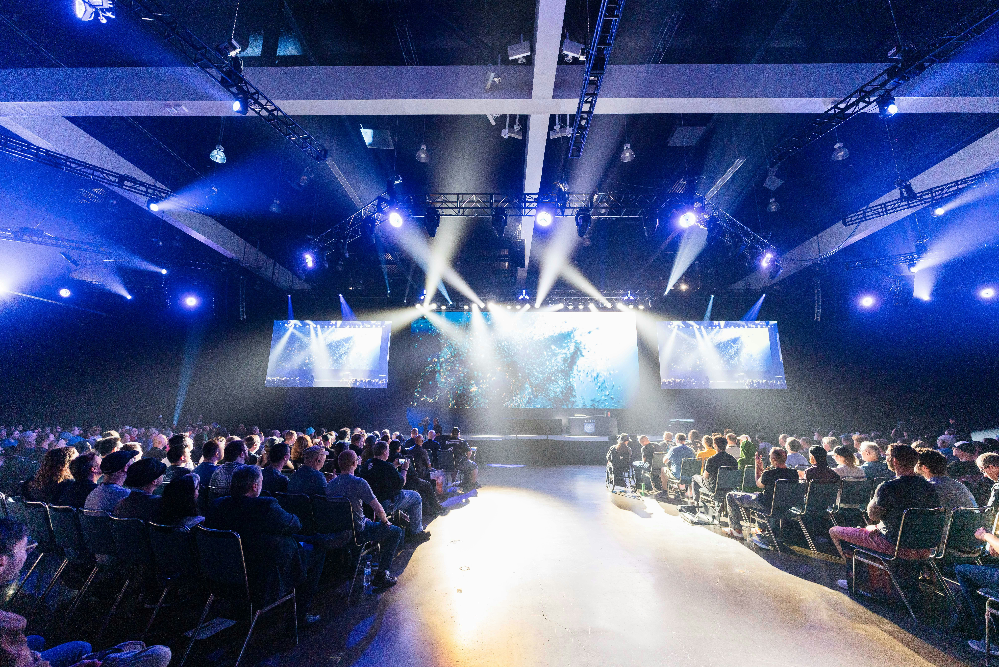

Sobre o Evento

O CyberTech University 2026 é um evento universitário realizado pela Unesc dedicado à tecnologia, inovação e segurança digital. O encontro foi pensado para proporcionar aos estudantes uma experiência de aprendizado além da sala de aula, aproximando o conhecimento acadêmico das situações e desafios encontrados no mercado de tecnologia
Durante o evento, os participantes terão a oportunidade de conhecer novas tecnologias, acompanhar profissionais da área e compartilhar experiências com outros estudantes. A programação reúne palestras, workshops, desafios de programação e apresentações de projetos acadêmicos.
Principais atrações
- Palestras sobre segurança digitar e inteligência artificial
- Workshop de desenvolvimento de aplicações seguras
- Desafio de programação CyberTech
- Apresentação de projetos acadêmicos
- Interação entre estudantes e profissionais de tecnologia
Saiba mais sobre os eventos da Unesc.
Palestras e Atividades
As palestras do CyberTech University 2026 foram cuidadosamente planejadas para oferecer aos participantes uma visão ampla e atualizada sobre os principais temas da tecnologia. Cada apresentação busca não apenas transmitir conhecimento técnico, mas também estimular reflexões sobre inovação, segurança digital e o impacto da tecnologia na sociedade.
Palestra: Segurança Digital
Ministrada pelo Prof. João Silva, especialista em cibersegurança. A palestra abordará os principais desafios da proteção de dados em ambientes corporativos e acadêmicos.
Palestra: Inteligência Artificial Aplicada
Com a Profa. Maria Oliveira, pesquisadora em IA. Serão discutidas aplicações práticas de machine learning em saúde, educação e indústria, além dos impactos éticos da tecnologia.
Workshop: Desenvolvimento de Aplicações Seguras
Conduzido por Carlos Mendes, engenheiro de software. Os participantes aprenderão técnicas de programação segura, prevenção de ataques comuns e boas práticas de desenvolvimento.
Desafio de Programação CyberTech
Competição entre estudantes para resolver problemas de lógica e algoritmos em tempo real. O desafio promove trabalho em equipe e estimula a criatividade na solução de problemas.
Apresentação de Projetos Acadêmicos
studantes da Unesc apresentarão projetos inovadores desenvolvidos em sala de aula, incluindo aplicativos, sistemas de segurança e soluções baseadas em inteligência artificial.